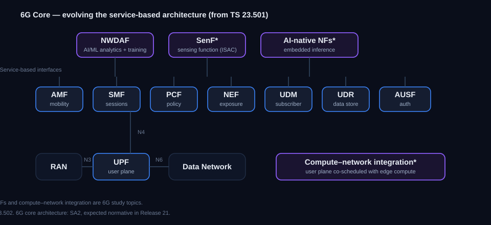

6G Core — The Next-Generation Core Network in 3GPP
See how the core network is set to evolve for 6G — the architecture study in 3GPP, how it builds on the 5G Core's service-based design, and the new directions under examination.
Status key: Study = feasibility work. Normative = approved specification content. Planned = Rel-21 scope stated by 3GPP, not yet frozen.
The architecture study

Figure 1 — The service-based core functions carried toward 6G, plus the AI-native and sensing functions and the compute-integration direction under study.
The 6G core architecture — what grows out of, or replaces, the 5G Core's service-based architecture (SBA) — will be owned by 3GPP's system-architecture group (SA2), with the normative specifications expected in Release 21. Early 6G work so far sits mainly in service requirements (SA1) and RAN; a dedicated SA2 6G core architecture specification has not yet been finalised. The core must cope with very high throughput, sub-millisecond services, AI built in as a native capability, and the seamless blending of terrestrial, non-terrestrial, and private deployments. References: baseline TS 23.501 / TS 23.502; 6G core architecture is a Rel-21 expectation. Status: planned (Rel-21); early study.
The service-based foundation it builds on
The 5G Core defines every function with a service-based interface, and that model is the starting point for 6G. The functions below are the baseline being carried forward and evolved.
- AMF — Access and Mobility Management. The single entry point for device access: signalling termination, registration and authentication anchoring, mobility, and paging. The 6G direction deepens its link to analytics for AI-assisted mobility. TS 23.501 §6.2.6.
- SMF — Session Management. Manages the session lifecycle, address allocation, traffic routing, and QoS enforcement toward the user plane. A focus for compute integration in 6G. TS 23.501 §6.2.7.
- UPF — User Plane. The forwarding function: routing, inspection, QoS enforcement, and local break-out for edge computing. The prime target for "compute-aware" routing in 6G. TS 23.501 §6.2.8.
- PCF — Policy Control. Session, access, mobility, and device policy; the 6G direction is policy driven from real-time analytics. TS 23.501 §6.2.13.
- NEF — Network Exposure. The secure gateway to outside applications; gains importance as the exposure point for sensing and AI services. TS 23.501 §6.2.11.
- UDM / UDR — Data management and repository. Subscriber data, credentials, and the converged data store behind them. TS 23.501 §6.2.14 / §6.2.15.
Status: evolving towards 6G.
AI as a native capability
In 5G, the analytics function (NWDAF) sits alongside the network functions. For 6G the study asks whether AI should be built directly into the functions themselves — with embedded inference, model training and distribution handled as first-class network services, and a full model lifecycle (data provenance, versioning, and explainability). The network data analytics function and its training and inference roles are the springboard for this. A separate, application-facing track exposes AI/ML to vertical applications through the SEAL enablement layer. References: TS 23.288 (network data analytics / NWDAF); TS 23.482 (SEAL AI/ML enablement for verticals — application-layer, distinct from 5GC-native AI/ML); TS 28.105 (AI/ML management). Status: evolving / 6G study.
Next-generation sessions and QoS
The session and quality-of-service framework is being pushed toward 6G service needs: deterministic, sub-millisecond flows; very high throughput sessions; and a two-way quality API that lets authorised applications both set end-to-end quality targets and receive quality reports back, coordinated through the exposure and policy functions. References: combined-QoS requirements in TS 22.261; exposure via NEF to the policy and session functions. Status: requirements normative, follow-on work in progress.
Compute and network together
A distinctive 6G direction is co-designing where computation runs with how sessions are managed. The 5G edge-computing framework, where the session and user-plane functions already steer traffic toward edge application servers, is the precursor. The 6G study explores exposing compute-resource availability as a first-class quality parameter and scheduling sessions with awareness of edge processing — relevant to immersive, metaverse, and split-rendering services. References: edge computing TS 23.548 / TS 23.558; 6G architecture study. Status: study.
Integrated terrestrial and non-terrestrial
The 6G architecture work treats non-terrestrial access as an integral layer of the system rather than an add-on — spanning direct device-to-satellite access, multi-orbit constellations, and on-board processing — with the core handling session continuity and mobility across the terrestrial and satellite segments. References: NTN work in TS 23.501/23.502 and the 6G architecture study. Status: specified for 5G NTN, 6G integration under study.
Core specs and studies at a glance
| Spec / item | Area | Status |
|---|---|---|
| 6G System architecture (SA2) | Core architecture | Planned (Rel-21) |
| TS 23.501 / TS 23.502 | Service-based architecture & procedures (baseline) | Normative (evolving) |
| TS 23.288 | Network data analytics / NWDAF (network-side AI/ML) | Normative |
| TS 23.482 | SEAL AI/ML enablement (for vertical apps) | Normative |
| TS 28.105 | AI/ML management (OAM) | Normative |
| TS 22.261 | Service requirements, incl. combined QoS | Normative |
| TS 23.548 (network side) / TS 23.558 (application side) | Edge computing (compute-integration precursor) | Normative |